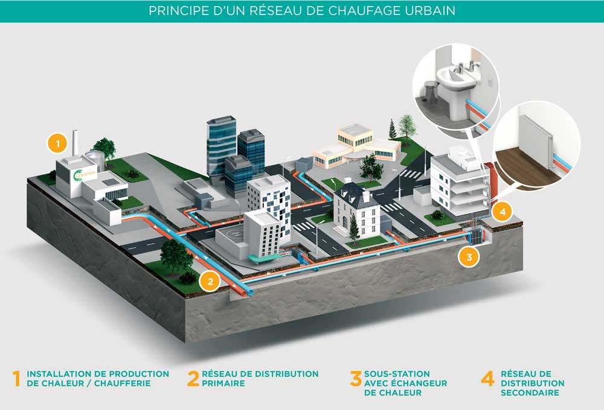

Par Nina KORICA, Gabriela MONEL-PARGA, Cassandre GORMEZANO, Mohammed-Khadimmoudin COULIBALY et Victoria GEL-BRAYON
Le réseau de chaleur de cergy-pontoise à été créé en 1970 par la communauté d’agglomération de Cergy-Pontoise. CenergY, filiale du groupe Coriance, a été créée le 10 juillet 2019 pour exploiter le réseau de chaleur de la Communauté d'agglomération de Cergy-Pontoise dans le cadre d'une Délégation de Service Public. Il dessert environ 33 000 logements ainsi que de nombreux équipements publics et bureaux, couvrant les communes de Cergy, Pontoise, Éragny et Saint-Ouen-l'Aumône. Avec plus de 61 km de canalisations, il fournit chaleur et eau chaude grâce à un mix énergétique performant et durable. Aujourd’hui, 51 % de la chaleur provient de l’incinération des déchets ménagers, 25 % de la biomasse et 24 % du gaz. L’utilité première du réseau de chaleur à Cergy-Pontoise, au-delà des considérations environnementales, était d’assurer une source de chauffage centralisée, fiable et économique pour les habitants et les équipements publics. À l’origine, il a été créé pour :
Le réseau de chaleur de Cergy s’adapte-t-il aux enjeux environnementaux actuels ?
Avant de développer cette problématique et répondre à cette problématique, comprenons plus en détail comment s’organise et fonctionne notre réseau de chaleur.
Cette carte représente les différentes interactions entre les sites du réseau de chaleur mais également les principaux dangers qu’un tel réseau implique sur le territoire
La géothermie est une technique qui exploite la chaleur naturelle stockée dans le sous-sol terrestre pour produire de l'énergie ou chauffer des bâtiments. Cette chaleur provient principalement de la désintégration des éléments radioactifs naturels et de la chaleur résiduelle issue de la formation de la Terre. Dans les années 1980, le réseau de chaleur de Cergy-Pontoise a tenté d’utiliser la géothermie pour chauffer les bâtiments de l’agglomération. Cependant, plusieurs problèmes ont rapidement émergé : La température du gisement géothermique était trop basse pour assurer une production de chaleur efficace et le débit d’eau était insuffisant, limitant la quantité d’énergie pouvant être extraite. Face à ces contraintes, la géothermie a été progressivement abandonnée, et en 1996, l’agglomération a choisi de se tourner vers une autre source d’énergie renouvelable : la valorisation énergétique des déchets. Cela a permis de récupérer la chaleur issue de l’incinération des déchets pour chauffer le réseau.
Le processus de récupération d'énergie dans les unités de valorisation énergétique (UVE) repose tout d'abord sur l'incinération des déchets, générant de la chaleur sous forme de vapeur. Cette chaleur est ensuite transformée en eau surchauffée, distribuée via des réseaux enterrés aux sous-stations pour chauffer les bâtiments. La biomasse, source d'énergie renouvelable, provient de forêts gérées durablement et est utilisée dans des chaudières pour produire de la chaleur, qui est également acheminée via un réseau de chaleur. En cas de secours, le gaz naturel, moins polluant, sert d'appoint pour garantir une distribution continue. CenergY, opérant dans l'agglomération de Cergy-Pontoise, utilise ces sources d'énergie renouvelable et de récupération pour fournir de la chaleur à environ 33 000 logements et équipements publics
Le réseau de chaleur repose sur une collaboration entre les acteurs publics, privés et usagers, qui est structurée en quatre parties. La Communauté d’agglomération de Cergy-Pontoise qui est propriétaire du réseau de chaleur définit les orientations stratégiques et délègue l’exploitation à un opérateur privé via une Délégation de Service Public (DSP). Elle s'assure que le réseau répond aux objectifs de performance énergétique et environnementale fixés dans le cadre de la transition énergétique. Depuis 2019, CenergY qui est une filiale du Groupe Coriance, exploite, entretient et développe le réseau, en augmentant la part des énergies renouvelables grâce à la valorisation de la biomasse. Coriance apporte son expertise technique et financière dans la gestion des réseaux de chaleur et de froid urbains depuis 25 ans. Les abonnés (bailleurs sociaux, copropriétés, entreprises, bâtiments publics) financent une partie du réseau via leur abonnement et bénéficient d’une chaleur stable et compétitive. Leur engagement dans le réseau est essentiel pour assurer sa viabilité économique et son expansion. Les usagers finaux (habitants, entreprises, établissements publics) consomment cette chaleur pour leurs besoins en chauffage et en eau chaude, ils profitent d’une énergie plus verte et moins chère (grâce à l’utilisation accrue de la biomasse et d’autres énergies renouvelables). Leur consommation et leur retour d'expérience permettent d'ajuster et d'améliorer les services proposés.
Après des travaux de modernisation majeurs, incluant le remplacement de 60 % des canalisations et la rénovation des sous-stations, plus de 70 % de la chaleur proviendra d’énergies renouvelables et de récupération. Ce projet ambitieux permet de réduire de moitié les émissions de gaz à effet de serre par rapport à 2019. En 2020, CenergY a été labellisé "Éco Réseau de chaleur" par l’AMORCE, soulignant son exemplarité en matière de performance environnementale. Ce réseau allie ainsi écologie, économie et fiabilité pour répondre aux besoins énergétiques du territoire.
La création du réseau de chaleur à Cergy-Pontoise répond ainsi à plusieurs objectifs majeurs :